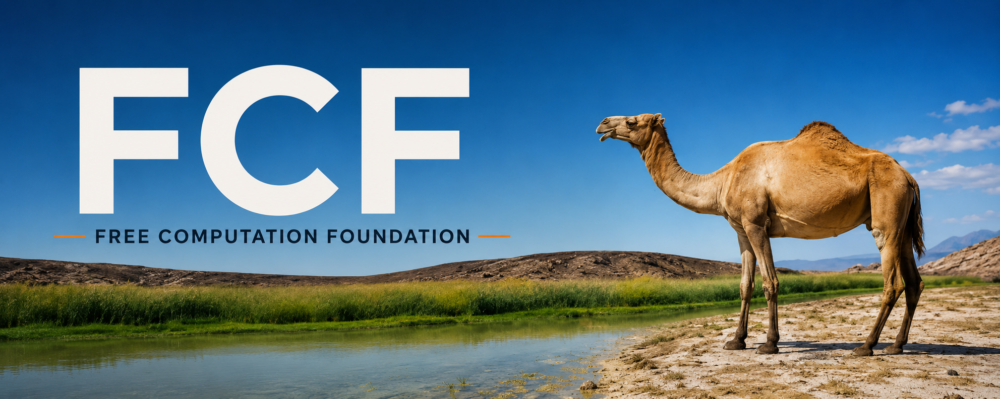

What this site is
This is the public index for software developed under the Free Computation Foundation. It is intentionally small, static, readable, and usable without JavaScript.
FCF uses this site to make project documentation, source code, releases, checksums, semantic-model distribution, graphical resources, and preservation provisioners easy to locate. CENTL is the first project published here.
Current project
| Project | Status | Purpose |
|---|---|---|
| CENTL | v0.14.0 Oasis candidate | Exact-first mathematics, physics, computation, and verification. |
| CENTL-SCi | Local semantic runtime | Scientific problem interpretation with semantic output kept outside the mathematical trust boundary. |
| CENTL-MIRAGE | Development / experimental | Local self-development, specification ingestion, staged candidates, and evidence planning. |
| CENTL CARAVAN | Phase 1 laboratory | Content-addressed authenticated preservation and availability. |
Install CENTL
curl -fsSLO https://raw.githubusercontent.com/chasebryan/centl/main/install
sh install
centl-sciThe native installer verifies release integrity and performs smoke checks before activation. GNU/Linux is the reference platform and active release target.
Direct semantic distribution
FCF is making the reference semantic layer distributable without a hosted inference API or model hub in the runtime path. An approved model can be exported from the Foundation preservation store as a content-addressed FCF Semantic Origin, then replicated by CARAVAN without changing which bytes CENTL trusts.
Preservation and The Bazaar
FCF is building an upstream-loss-resistant preservation and distribution layer for CENTL, including source, releases, build inputs, semantic models, and recovery material. The Bazaar is the human-readable directory of FCF origins and CARAVAN provisioners.
Why simple HTML?
The foundation site should remain useful when fashionable web stacks disappear. Static files are cheap to preserve, easy to audit, fast to load, and simple to move to another HTTPS server when FCF has its own domain and infrastructure.